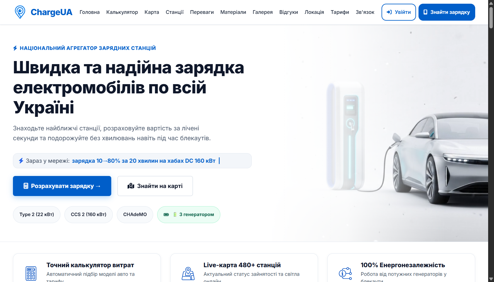
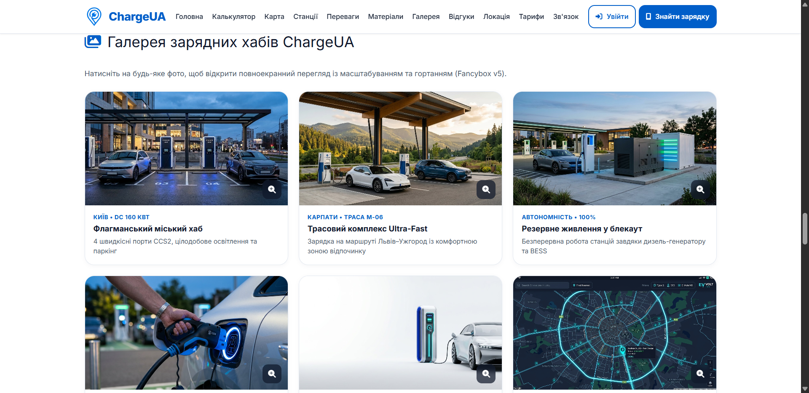
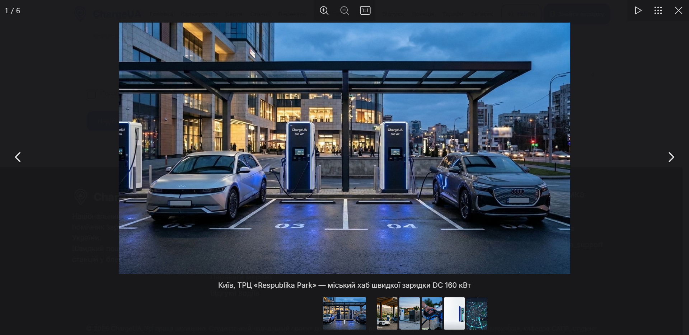
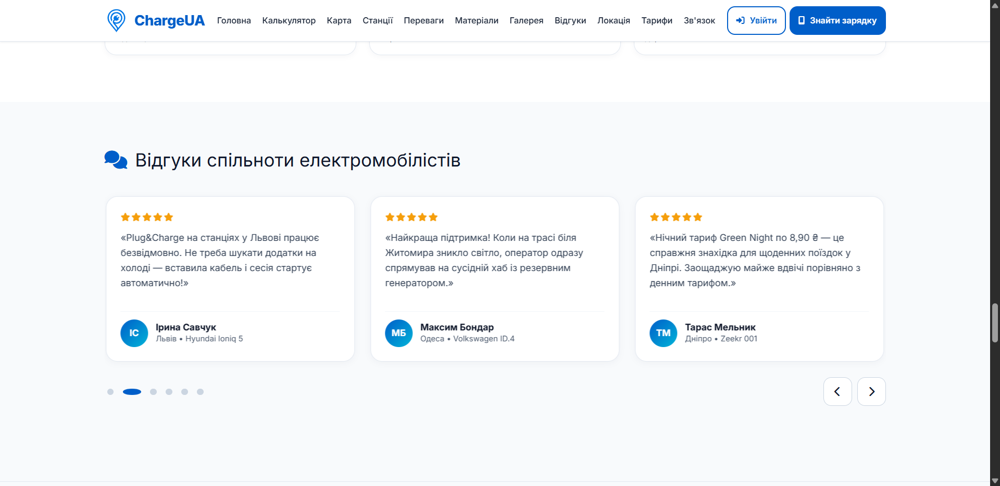
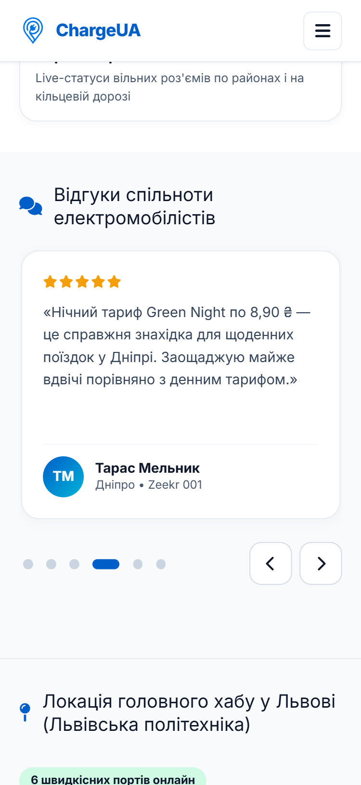
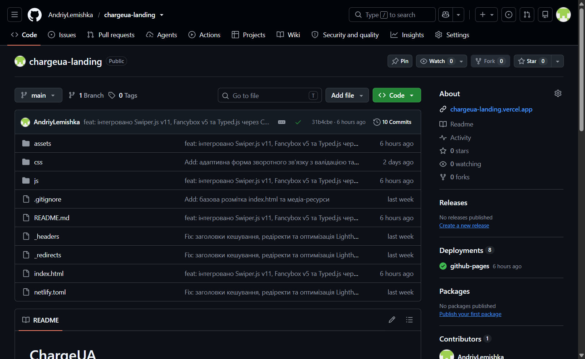
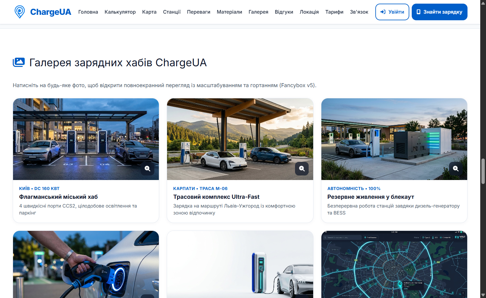

Лабораторна робота №10: Інтеграція динамічних медіакомпонентів та JS-бібліотек
Інтерактивний звіт-портал до здачі та усного захисту. У лендинг національної мережі швидкісних електрозарядок ChargeUA інтегровано автономні Vanilla JS бібліотеки Swiper.js v11, Fancybox v5 та Typed.js v2.0.12 через jsDelivr CDN, виконано аудит у Chrome DevTools (1280px / 375px) та налаштовано CI/CD деплой на Vercel.
1. Мета роботи та вибір Vanilla JS бібліотек
Архітектура без jQueryДля сайту ChargeUA ключова вимога — швидке завантаження на мобільному інтернеті водія на трасі. Тягнути jQuery (~30 КБ у gzip) заради Slick Carousel чи Lightbox2 тут недоцільно: сучасний DOM API перекриває потреби самостійно.
Саме тому в проєкт підключено три автономні бібліотеки без залежностей. Стилі завантажуються у <head>, щоб не було миготіння нестилізованого контенту (FOUC), а скрипти — в кінці <body> із defer та обгорткою в DOMContentLoaded.
| Секція ChargeUA | Обраний плагін (CDN) | Чому не jQuery-аналог | Налаштований функціонал |
|---|---|---|---|
| #reviews (Відгуки водіїв) | Swiper.js v11 | Slick потребує jQuery і не має сучасного touch-рушія | 6 слайдів, loop: true, autoplay + pauseOnMouseEnter, брейкпоінти 1/2/3, a11y |
| #gallery (Галерея хабів) | Fancybox v5 | Lightbox2 не підтримує плавний pinch-to-zoom і тулбар прев’ю | CSS Grid із 6 фото, data-fancybox="chargeua-gallery", Panzoom до 3x, fade |
| .hero-sec (Hero-переваги) | Typed.js v2.0.12 | Самописні таймери дають стрибки верстки (CLS) | 4 слогани про DC 160 кВт, генератори та Green Night із smartBackspace |
2. CDN-підключення, HTML-розмітка та JS-конфігурація
index.html + js/media-plugins.js<!-- У <head>: запобігаємо ефекту FOUC -->
<link rel="stylesheet" href="https://cdn.jsdelivr.net/npm/swiper@11/swiper-bundle.min.css">
<link rel="stylesheet" href="https://cdn.jsdelivr.net/npm/@fancyapps/ui@5.0/dist/fancybox/fancybox.css">
<!-- Перед </body>: неблокуюче завантаження через defer -->
<script src="https://cdn.jsdelivr.net/npm/swiper@11/swiper-bundle.min.js" defer></script>
<script src="https://cdn.jsdelivr.net/npm/@fancyapps/ui@5.0/dist/fancybox/fancybox.umd.js" defer></script>
<script src="https://cdn.jsdelivr.net/npm/typed.js@2.0.12" defer></script>
<script src="js/media-plugins.js" defer></script>document.addEventListener('DOMContentLoaded', () => {
// 1. Typed.js у Hero-секції
const typedTarget = document.querySelector('#typed-text');
if (typedTarget && typeof window.Typed !== 'undefined') {
typedTarget.textContent = '';
new window.Typed('#typed-text', {
strings: [
'зарядка 10→80% за 20 хвилин на хабах DC 160 кВт.',
'480+ станцій по всій Україні зі статусом онлайн.',
'робота від генераторів та накопичувачів у блекаути.',
'нічний тариф Green Night — 8,90 ₴/кВт·год.'
],
typeSpeed: 42, backSpeed: 24, backDelay: 2200,
startDelay: 300, loop: true, smartBackspace: true
});
}
// 2. Swiper.js v11 (#reviews)
const reviewsEl = document.querySelector('.reviews-swiper');
if (reviewsEl && typeof window.Swiper !== 'undefined') {
new window.Swiper('.reviews-swiper', {
loop: true, spaceBetween: 24, speed: 600, grabCursor: true,
autoplay: { delay: 3500, disableOnInteraction: false, pauseOnMouseEnter: true },
pagination: { el: '.reviews-pagination', clickable: true },
navigation: { nextEl: '.reviews-next', prevEl: '.reviews-prev' },
a11y: { prevSlideMessage: 'Попередній відгук', nextSlideMessage: 'Наступний відгук' },
breakpoints: {
320: { slidesPerView: 1, spaceBetween: 16 },
768: { slidesPerView: 2, spaceBetween: 20 },
1024: { slidesPerView: 3, spaceBetween: 24 }
}
});
}
// 3. Fancybox v5 (#gallery)
if (typeof window.Fancybox !== 'undefined') {
window.Fancybox.bind('[data-fancybox="chargeua-gallery"]', {
Carousel: { Transition: 'fade' },
Images: { Panzoom: { maxScale: 3 } },
Toolbar: {
display: {
left: ['infobar'],
middle: ['zoomIn', 'zoomOut', 'toggle1to1'],
right: ['slideshow', 'thumbs', 'close']
}
}
});
}
});3. Технічний скріншот-звіт (Chrome DevTools, GitHub, Vercel)
Натисніть для збільшення






4. Аудит у Chrome DevTools та Промпт-паспорт
QA + Prompt Log| Перевірка | Інструмент / Роздільність | Результат | Статус |
|---|---|---|---|
| CDN & Мережа | DevTools Network | Усі скрипти, CSS, шрифти, фото та favicon — 200 OK | Пройдено |
| Чистота консолі | DevTools Console | 0 помилок JS та 0 мережевих 404 | Пройдено |
| Шапка на 1280px | 1280×820 (11 пунктів меню) | Звужено відступи, прибрано переповнення (hdrScrollW = 1240px) | Пройдено |
| Мобільний тач-свайп | Emulation 375×812 touch | 1 слайд у ряд, scrollWidth = 375px, свайп і крапки працюють | Пройдено |
| Модалка Fancybox | 1280px + Esc | Виправлено z-index (99999) поверх шапки; зум 3x і Esc справні | Пройдено |
| Етап | Суть промпту до ШІ | Результат та інженерне доопрацювання |
|---|---|---|
| 1. Swiper.js | Senior Frontend: заміни #reviews на Swiper 11 з 6 картками, брейкпоінтами 1/2/3, loop та pauseOnMouseEnter. | Вичищено старий CSS #reviews .grid, додано адаптивну пагінацію і кнопки з 44px тач-зоною. |
| 2. Fancybox v5 | UI/UX Engineer: створи 6-карткову галерею #gallery (CSS Grid) із зумом і fade-переходом. | Згенеровано 4 фото станцій ChargeUA, піднято .fancybox__container на z-index: 99999. |
| 3. Typed.js | Performance Engineer: додай динамічний друк у Hero без впливу на <h1> і без CLS. |
Створено .hero-typed-line із фіксованою висотою і fallback-текстом до ініціалізації JS. |
| 4. CI/CD реліз | DevOps: закоміть у main за Conventional Commits і перевір автодеплой на Vercel. | Коміт 31b4cbe успішно зібрався на Vercel та оновив продакшн за лічені секунди. |